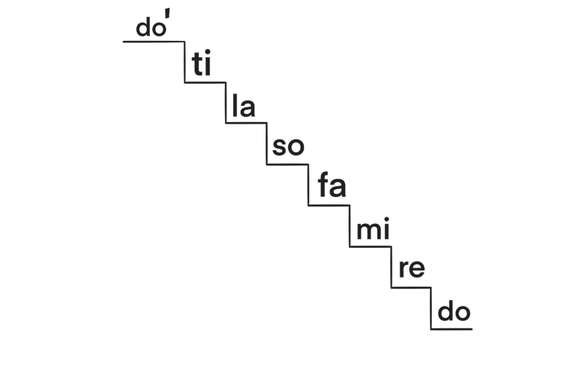
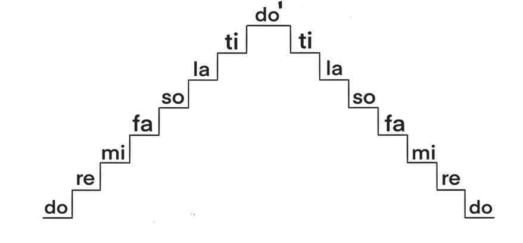

Vilevile, noti hizi zinaweza kuimbwa kwa kupanda na kushuka kama inavyoonekana katika Kielelezo namba 4.


Kazi ya kufanya namba 3
(a)Kwa kutumia vyanzo mbalimbali vya mtandaoni, chunguza video au sauti zilizorekodiwa zinazohusisha uimbaji wa solfa, kisha imba ngazi kuu kwa kupanda na kushuka.
(b)Imba ngazi kuu kwa kupanda noti tano juu na kushuka noti nne, fanya hivyo mpaka ufikie do' ya juu.

Kazi ya kufanya namba 4
Imba solfa zifuatazo:
(a)

(b)


Kazi ya kufanya namba 5
Kwa kuzingatia idadi ya mapigo katika jedwali namba moja, imba silabi za solfa zifuatazo:
(a)

(b)

(c)